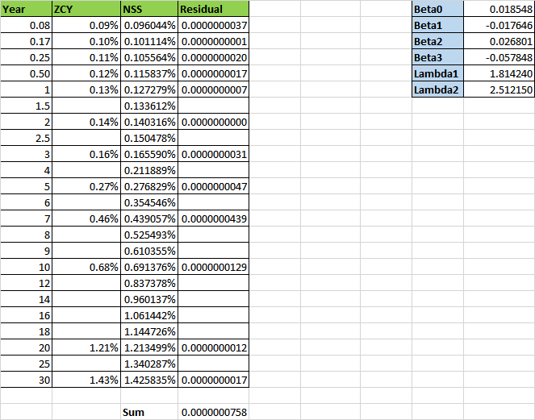
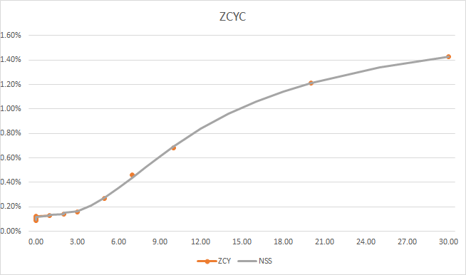

A A R Y A N D E O R I
- We collected the Zero Coupon Yield data available for certain maturity.
- Using Nelson Siegel Svensson method we calculated the NSS values and then found the residual by subtracting it from the original value.
- We calculated all the coefficients using the Excel solver such that the sum of residula is minimized.
- Then using the obtained function we plotted the ZCY Curve.

